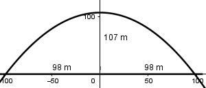

Aufgabe 138 Ein rechtwinkliges Dreieck hat die Fläche A = 80 cm2. Eine Kathete verhält sich zur Hypotenuse wie 3 : 5. Wie lang sind die Dreieckseiten?

a 3 --- = --- | *c c 5 a = 0,6 * c a * b A = ------- | *2 2 2 * A = a * b | :a 2 * A ------ = b a a eingesetzt: 2 * A b = ---------- 0,6 * c Satz von Pythagoras: c2 = a2 + b2 2 * A c2 = (0,6 * c)2 + (---------)2 0,6 * c 4 A2 c2 = 0,36c2 + --------- |*0,36c2 0,36c2 0,36c4 = 0,1296c4 + 4A2 |-0,1296c4 0,2304c4 = 4A2 |:0,2304 4 * 802 c4 = ---------- = 111 104 | 0,2304 c = 18,3 cm a = 0,6 * c = 0,6 * 18,3 cm = 11 cm 2 * 80 cm2 b = ------------ = 14,6 cm 11 cm